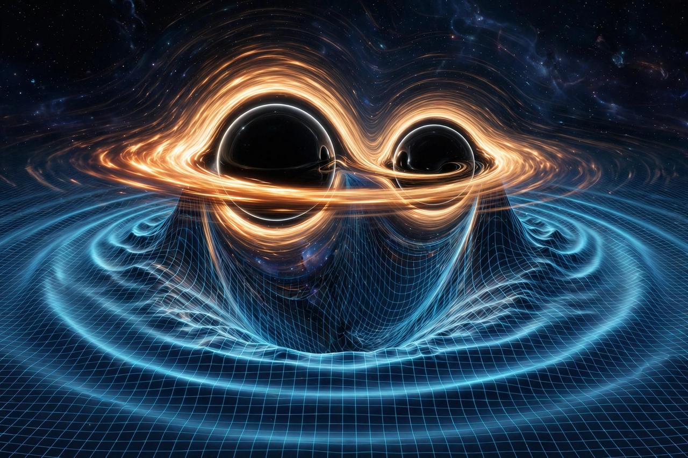

Gravitational wave
| Predicted | 1916, Albert Einstein |
|---|---|
| First direct detection | 14 September 2015, LIGO |
| Sources | Binary black holes, binary neutron stars, supernovae |

[Image: Artist's impression of two black holes spiralling together, rippling spacetime]Gravitational waves are oscillations of the gravitational field that travel through space at the speed of light; they are ripples in the curvature of spacetime generated by accelerated masses. Predicted by Henri Poincaré in 1905 and by Albert Einstein in 1916 as a consequence of general relativity, gravitational waves transport energy as gravitational radiation.
The first indirect evidence came from the orbital decay of the Hulse–Taylor binary pulsar (discovered 1974), which matched general relativity's predictions and earned the 1993 Nobel Prize in Physics. The first direct detection, GW150914 from the merger of two black holes, was made by the LIGO detectors on 14 September 2015 and announced in February 2016; Rainer Weiss, Kip Thorne and Barry Barish received the 2017 Nobel Prize. Gravitational-wave astronomy has since catalogued hundreds of mergers of black holes and neutron stars.
Theory
In general relativity, a system with a changing quadrupole moment radiates gravitational waves — spherically symmetric or purely rotational motions do not radiate. The waves are transverse, with two polarisations ('plus' and 'cross') that alternately stretch and squeeze distances in perpendicular directions as they pass. Because gravity is extremely weak, the strain produced at Earth by even the most violent astrophysical events is tiny — of order 10⁻²¹ for GW150914, a change in the 4 km LIGO arms of about a thousandth of a proton diameter.
Detection
Laser interferometers (LIGO in the US, Virgo in Italy, KAGRA in Japan) measure these strains by comparing light travel times along perpendicular arms. Pulsar timing arrays, which monitor networks of millisecond pulsars, reported evidence in 2023 for a gravitational-wave background at nanohertz frequencies, probably from supermassive black-hole binaries. The planned space-based detector LISA (launch in the 2030s) will observe millihertz sources.
Sources and astronomy
Detected sources include binary black-hole mergers across a wide mass range, binary neutron-star mergers — notably GW170817 (2017), whose accompanying gamma-ray burst and kilonova inaugurated multi-messenger astronomy — and mixed neutron-star/black-hole systems. Gravitational waves provide unique information about black-hole populations, neutron-star matter, and an independent measure of the Hubble constant.